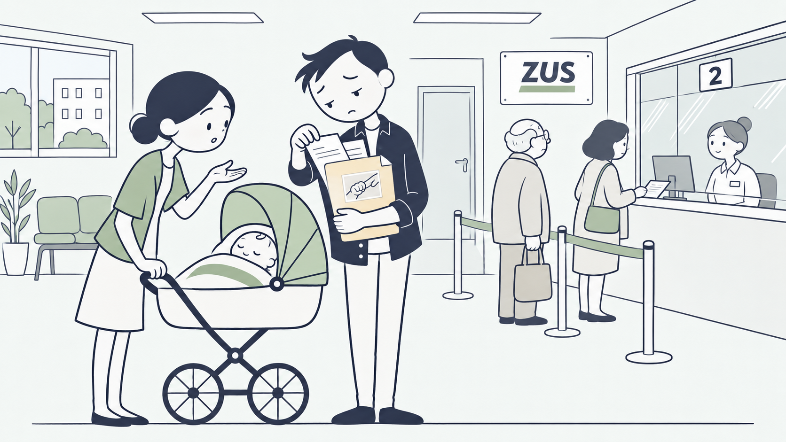
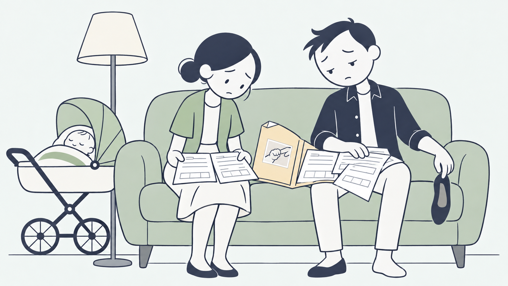
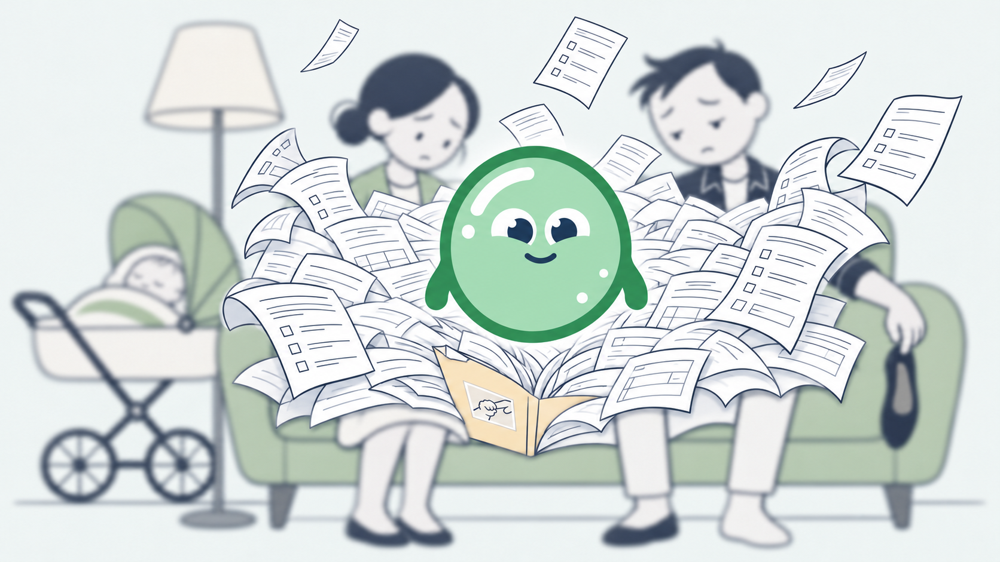
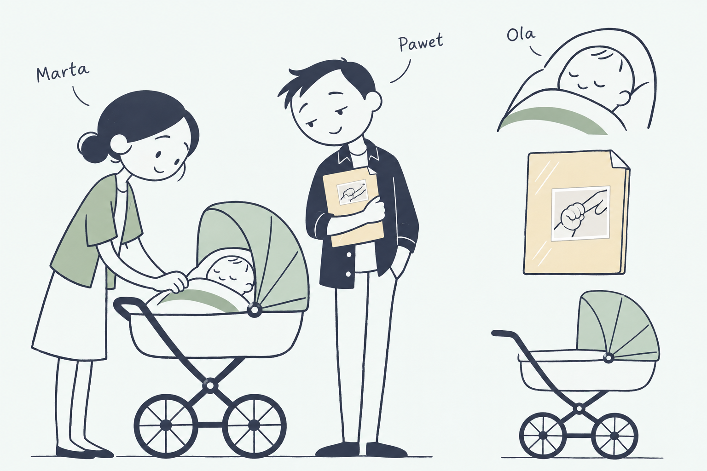
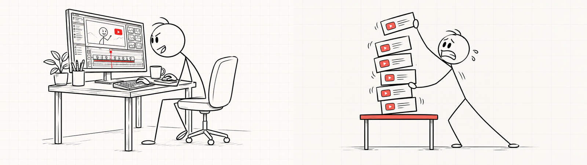
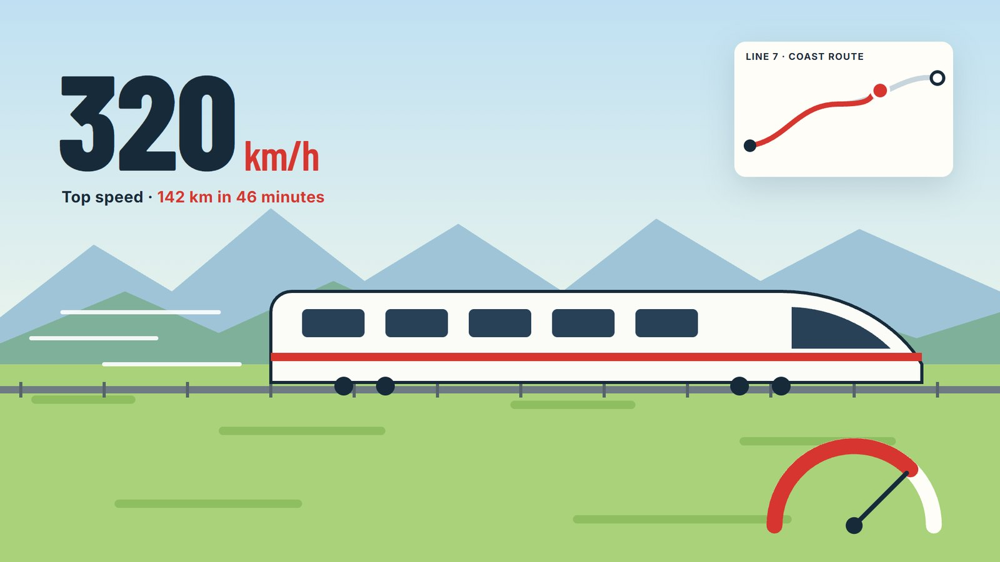
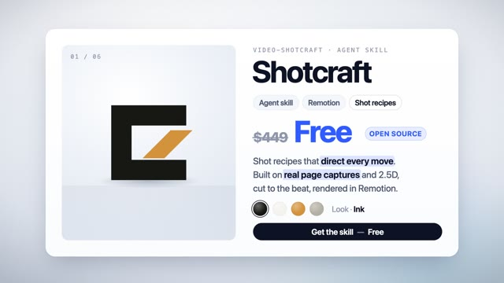

Przy zwrocie głowy Marta nadal ma ten sam nos i niski kok. Na kanapie Paweł ma tę samą grzywkę i budowę co przy wózku. Z tej planszy animator buduje wspólną obsadę.
Otwórz zlecenie dla Claude Code
Każdą planszę można otworzyć w pełnej rozdzielczości. Ruch w nowych ujęciach powstaje z póz, kontaktu z przedmiotami i reakcji drugiej osoby.



Fragment v2 do zachowania. Kamera wyhamowuje na sprawie „Zgłoś urodzenie Oli”, pozostawiając czas na odczytanie terminu.
Po słowach o wspólnym urlopie oczy Zusika prowadzą na przypis. Istniejąca poza czytania pozwala mu zmienić się w książkę. W proponowanym przejściu jej strona rozwija się w kartę źródła.


